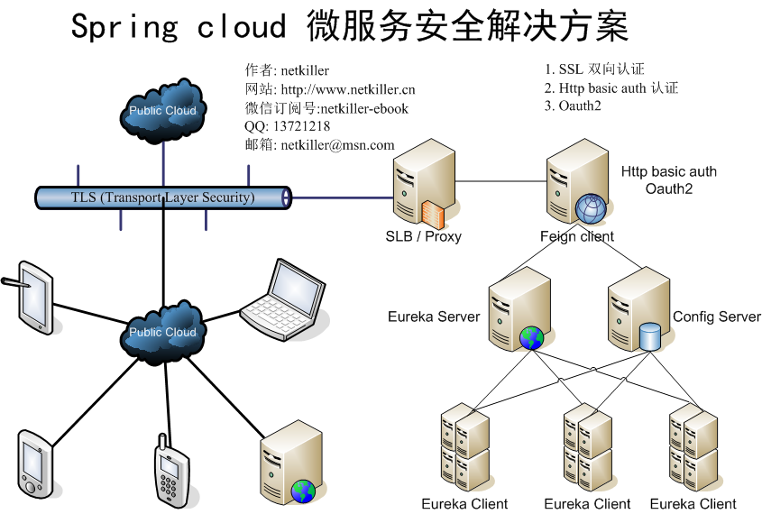

|  |
Restful 的通信安全有很多中解决方案,例如
HTTP Basic Auth 认证
Cooke / Session 认证
Token 认证
Oauth / OpenID
等等，每一种方案都很成熟，这里不依依解释，如果不了解，请去搜索引擎查找相关资料。这里我谈谈在实施微服务项目中的心得，首先项目采用 Spring cloud 方案，Spring cloud 有自己的RestController 控制器，我们需要遵循他的规范开发，这就限制了很多传统的认证加密方法不能应用到 Spring cloud中。
例如传统restful 使用 POST 方式提交，POST 数据格式如下：
name=Neo&age=23&md5=xxxxxxx
然后做 token 校验。
而 Spring cloud 使用 raw 格式的数据做POST提交，例如
@RequestMapping(value = "/member/create", method = RequestMethod.POST) public void create(@RequestBody Member member)
我们不想在Spring框架上做额外的改动，又想解决信息的安全问题。
这个方案简单，实施起来最为方便，因为项目比较紧急，所以就采用了这个方案，这个方案既可以在运维方处理，也可以在开发方处理，对于 Spring boot 只需引入Spring Security 简单配置，立即生效。
实现方式请参考：Spring boot with Spring security
上面的方案适合在防火墙内部的服务器间通信，如果跨机房或者在广域网上就不在安全了，通过嗅探器抓包，包括 http basic auth 的用户和密码，以及接口数据没有安全可言。 为Web 服务器增加 SSL 证书，可以解决信息安全问提。
证书可以使用CA机构颁发的证书，也可以自己生成证书。
证书可以配置在Web服务器上如Nginx， 实现方式请参考：http://www.netkiller.cn/www/nginx/conf.html#http2《Netkiller Web 手札》
也可以配置在 Spring boot 中， 实现方式请参考：Spring boot with HTTPS SSL
这个方案可以满足绝大部分用户的需求。
由于需要为手机端提供 restful 服务，之前的方式已经不能满足我们的需求，之前的方式更适合提供私有服务，不适合提供公共服务。所谓私有服务是指它的使用范围限制在企业内部，或者事业部间共享服务，总的来说可以通过防火墙控制服务区域。
对于公共服务 OpenID/Oauth 更适合，我们不关心用户地理位，终端设备的情况。实现方式请参考：Spring boot with Oauth2
SSL 双向认证
HTTP Basic Auth 认证
Oauth2 认证
这是我们最终的方案，双向认证是服务器与客户端两端都需要证书才能通信。
App(IOS/Android) --> SSL 双向认证 --> SLB/Proxy --> Feign Client